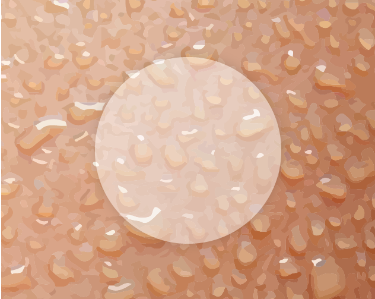
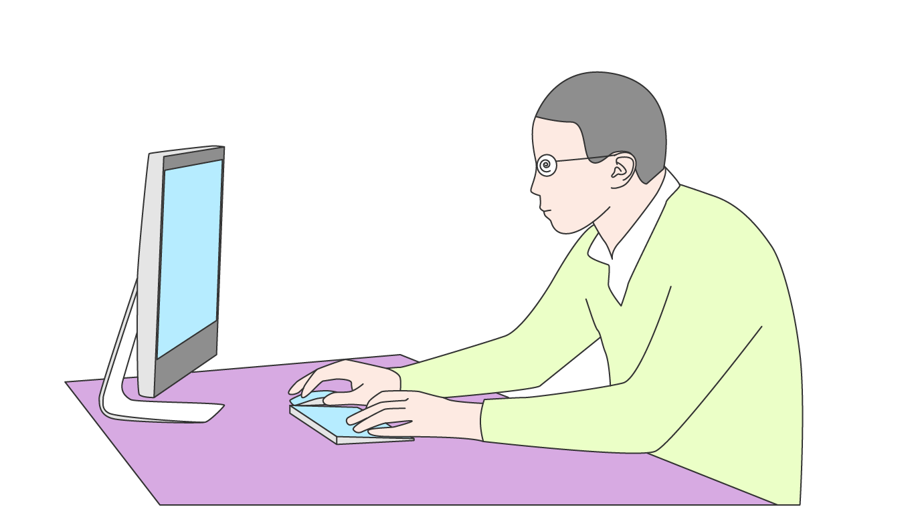
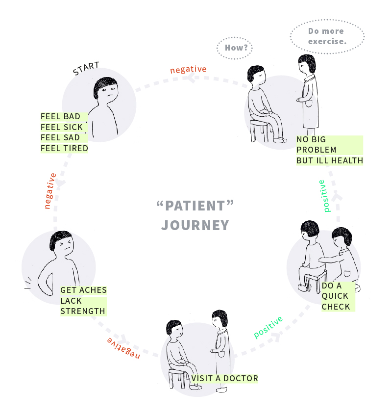
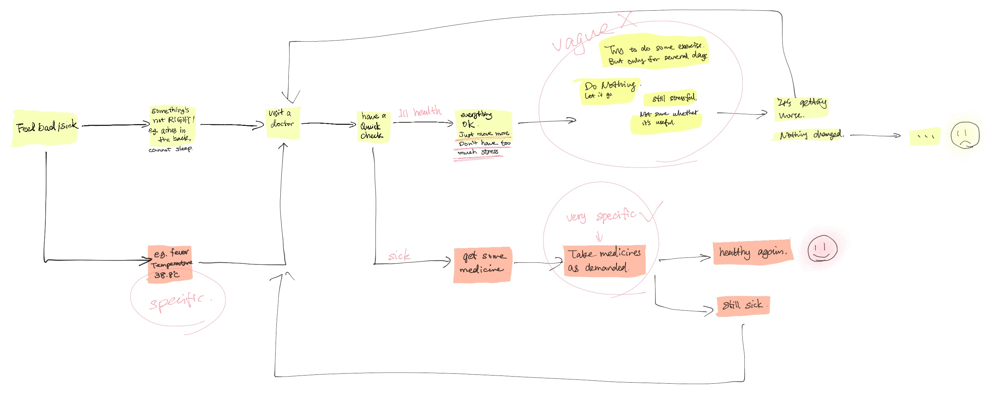
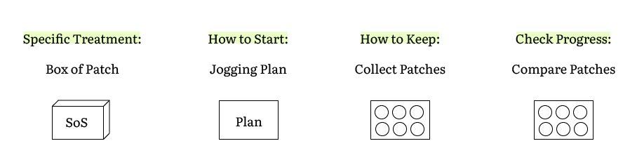
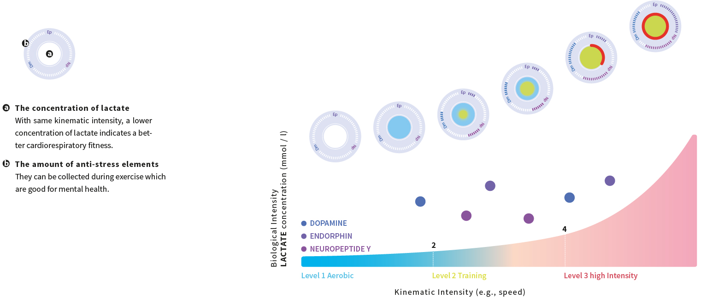

A SOLUTION FOR THE SEDENTARY LIFESTYLE
SLICE OF SWEAT
Slice of Sweat is a sweat patch which indicates the process of Metabolism when doing sports. It’s a medical product which helps people improve their health condition. To use the patch is like to collect Panini sticker. It helps people to make plans and brings fun to the exercise.
2018 | KIEL | SEMESTER PROJECT
#Design Research #Innovative Product #Interface Design #Experience Design
- BACKGROUND -
Sedentary Lifestyle
More people nowadays are engaged in office jobs and become increasingly sedentary. According to a 2018 study, office based workers typically spend 70-85% sitting. A lack of physical activity has been one of the leading causes of preventable death worldwide.
Problem
Many people live in a state of ill health. When people are not feeling good, they want advice from doctor. Usually they‘re not ill, but just in ill health. They‘re told to move more. But how to start? How to stick to it if no progress can be seen?
- RESEARCH -
01. Interviews & "Patient" Journey
I talked with people around me and asked them several questions:
- Have you ever visited a doctor and was told that you're ok?
- And why did you decide to go to a doctor?
- What happened after that?
Comparison an "unsuccessful patient journey" with a "successful patient journey":
Finding
- People cannot get specific suggestions from doctor if they are not ill.
- In a "successful patient journey" people take medicine according to the prescription.
- And usually they could quickly tell whether they are better or not.
Doctors will give different suggestions for different symptoms.
I narrowed my design scope for the vague suggestion "Move more".
Problem Statement
- How to get specific suggestions?
- How to start doing exercise?
- How to keep it regularly?
- How is the progress?
02. Literature Review & Visualisation:
Define Health
Health is the ability to adapt and manage physical, mental and social challenges throughout life. I’ve chosen physical and mental states of a person as my focus. One of the most important indication of the physical well-being is cardiorespiratory fitness, while the stress level indicates the mental health.
Finding: The trace elements in our sweat convey important information to us.
- OUTCOME -
Design a medicine-like product which demonstrates the changes/improvement of human body.
- INTRODUCTION -
Solution:
4 Steps SoS Patch Uses to Motivate a Healthy Habit

- DESIGN DETAILS -
Interface Design
How to Test Cardiorespiratory Fitness and Stress Level
Video
3 Levels During Exercise
The New "Patient" Journey
Easy and Effective
According to my research, jogging is the easiest and also one of the most effective exercises for improving both physical and mental health. It is an excellent means of conditioning the cardiovascular system.
Get Rewards See Progress
One thing that everybody will obtain after an exercise is SWEAT. As the patch translate the information in sweat. People could always check what he/she has gained.